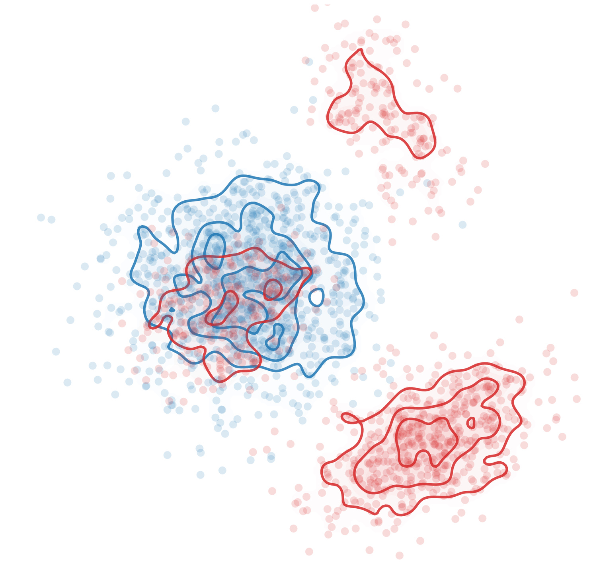
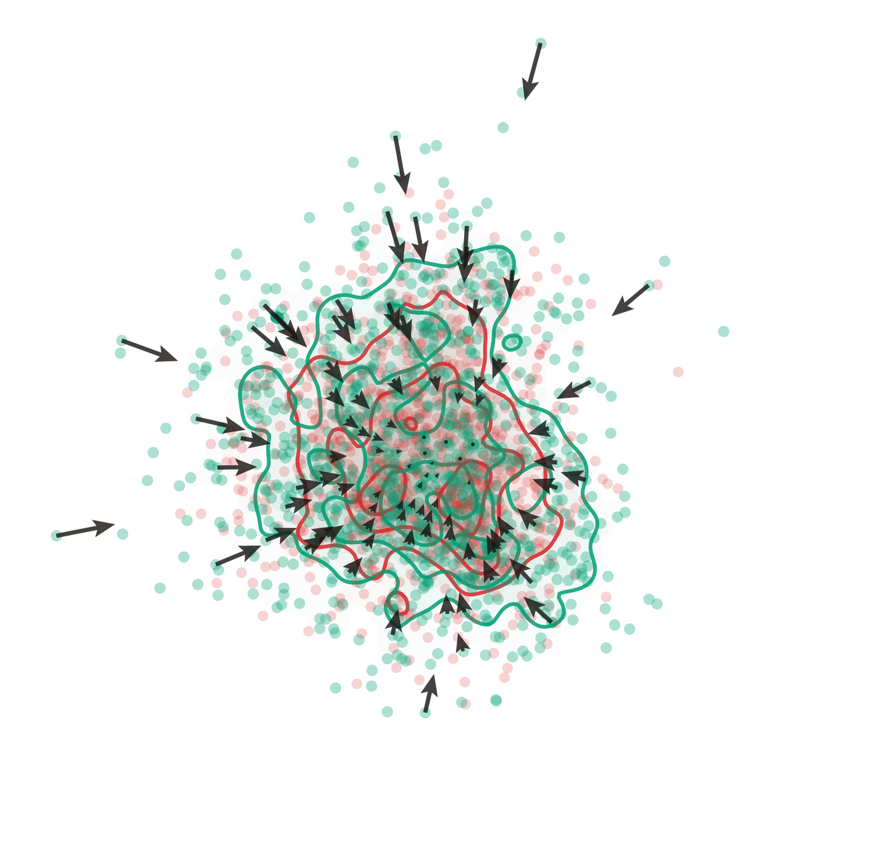
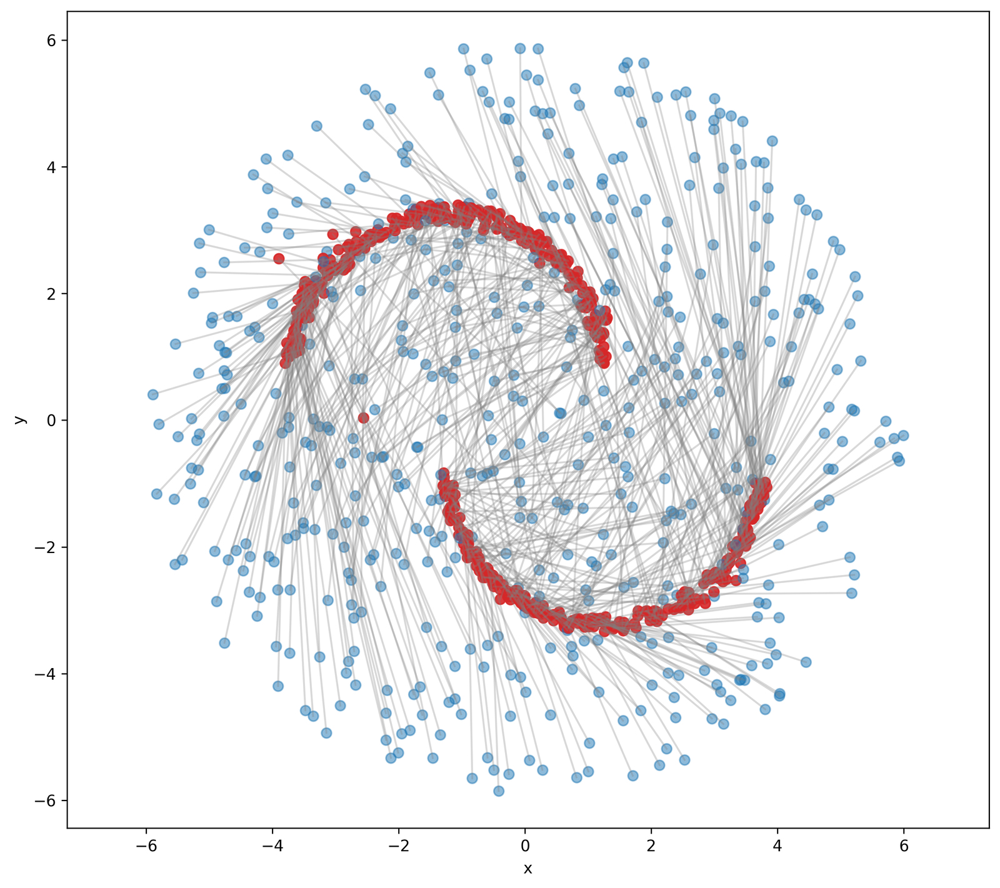
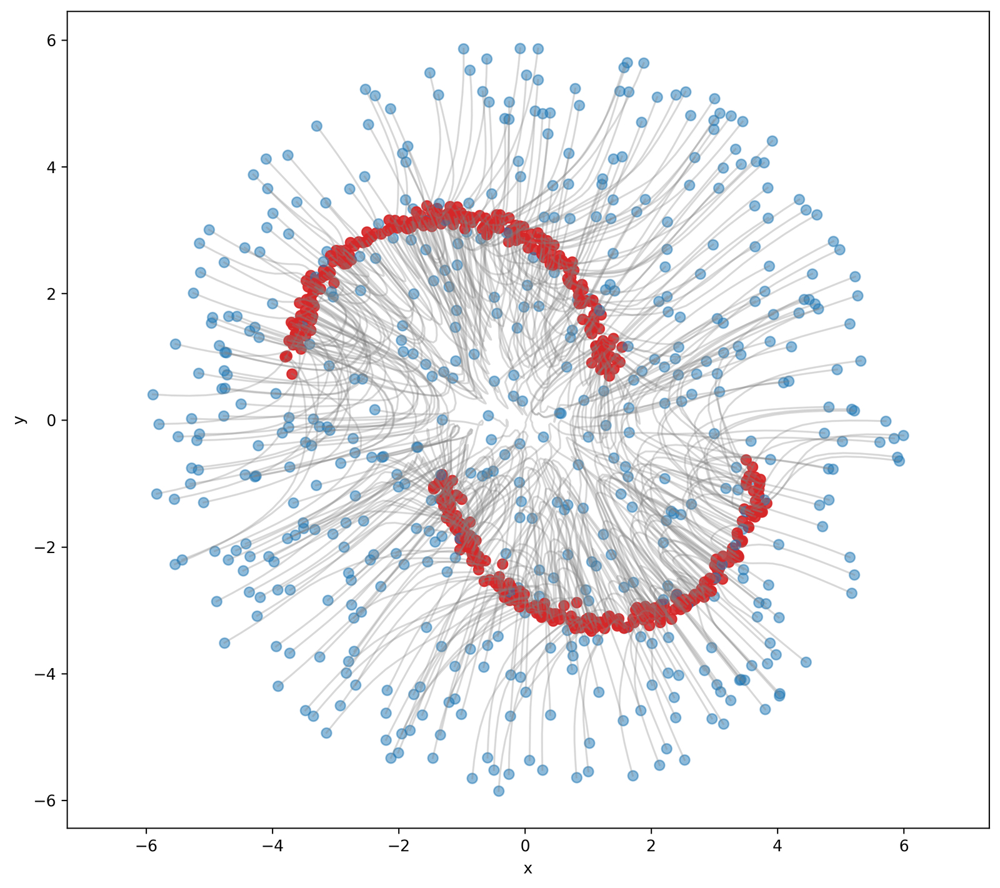
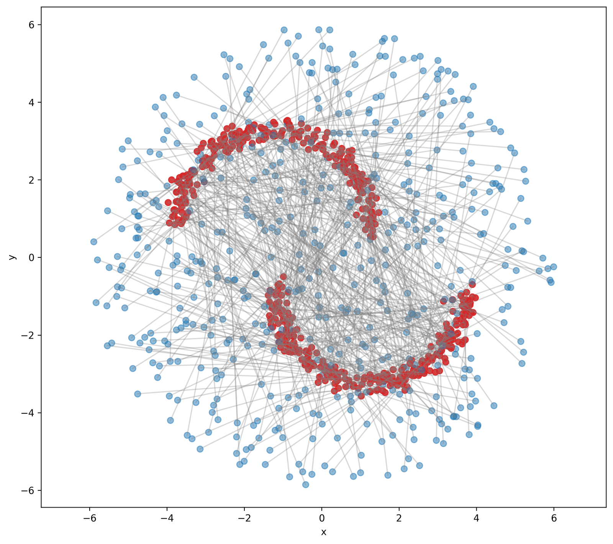
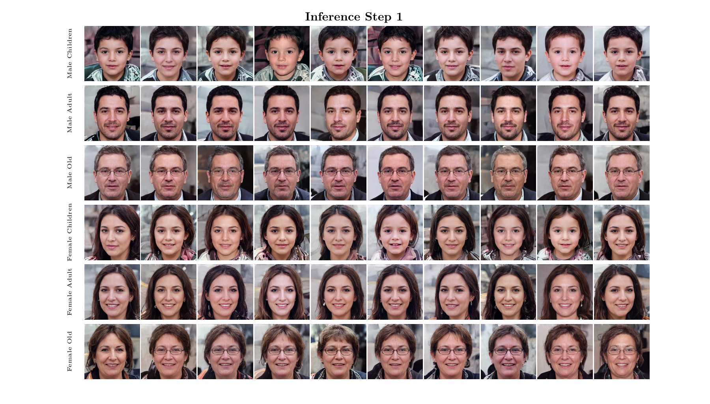

Follow a velocity field.
Learn local dynamics along a noise-to-data path. Numerical integration offers a natural way to spend more computation at inference.
NeurIPS 2026
One-step generation.
Flexible multi-step refinement.
1 UC Irvine2 University of Virginia3 University of Alabama at Birmingham4 Northeastern University
Can a drifting generative model keep its direct, one-step generation and also benefit from more inference steps? DFM learns transport between intermediate distributions, making both choices available to the same model.
01 / The problem
Flow-based and drifting models offer different ways to turn noise into data. The paper asks how to connect their inference behavior.
Learn local dynamics along a noise-to-data path. Numerical integration offers a natural way to spend more computation at inference.
Use distribution-level drift during training to shape generated samples. A direct endpoint map supports one-step generation, but does not naturally specify intermediate inference steps.
Apply drift supervision between intermediate marginals. The learned transport can span the whole path in one call or compose shorter intervals.
02 / The mechanism
The probability path comes from Flow Matching. The learning signal is a distribution-level drift correction.
Sample t < r on the noise-to-data path to obtain source marginal pt and target marginal pr.
Push samples from pt through the two-time model. Their predicted distribution is qt,r.
Attract predictions toward pr and subtract self-attraction within qt,r. Fit the resulting stop-gradient targets.
x̂r = xt + (r − t) uθ(xt, t, r)
sg[x̂r + Vq,pᵣ(x̂r)]
The distinction is the objective: DFM learns transport by matching marginal distributions, rather than regressing a pointwise conditional velocity. A second time input alone does not define this learning principle.
Different time pairs have different target distributions. Grouped drift computes the correction within each time pair; mixing those groups would mix different matching problems.


At inference
A single interval from 0 to 1 gives direct generation. A finer time grid composes the same learned transport across intermediate states. Each call evaluates uθ once.
The constructed marginal path admits explicit Wasserstein bounds. The paper also studies its relation to Flow Matching. Under the paper’s first-order consistency and regularity assumptions, the learned mean velocity recovers the local FM velocity as the interval shrinks. This is a conditional local connection, not a claim that the training drift V becomes the inference velocity, or that the learned map is globally optimal transport.
03 / Generation trajectories
A generation trajectory is the sequence of sample states produced during inference. NFE counts model evaluations per sample.
Compare DFM at 1 and 20 inference steps.
Same method · DFM at 1 NFE and 20 NFE.



Red endpoints show target samples; lines are reference interpolations.
Blue points are source samples. Red points are generated endpoints in the method panels and target samples in the reference panel. A one-step connector does not imply that intermediate states were evaluated. Equal NFE compares evaluation counts, not necessarily wall-clock cost.
Controls switch archived paper figures; they do not run model inference.
Only NFE values with corresponding paper figures are selectable: DFM and MeanFlow 1 / 20, Drift Model 1, Flow Matching 50. These are illustrative trajectories, not an assertion of a unique correct sample path.
Train a model and record your own trajectories04 / Quantitative evidence
Selected DFM trends from the paper. Lower FID is better; higher task success is better.
116.2 → 80.4 → 75.9
1 → 2 → 5 NFE
Decoded-real reference protocol
1.52 → 1.31
1 → 10 NFE
DFM-L/2 · 463M parameters
0.41 → 0.86
1 → 10 NFE
Average over the last 10 checkpoints
All rows from the paper’s class-conditional comparison. EMD is squared Wasserstein-2 distance in latent space. FFHQ FID compares decoded generated and decoded real images using the same frozen ALAE decoder.
| Method | NFE | MNIST EMD ↓ | MNIST accuracy ↑ | FFHQ EMD ↓ | FFHQ FID ↓ |
|---|---|---|---|---|---|
| Flow Matching | 50 | 37.2 | 100.0% | 198.4 | 77.4 |
| MeanFlow | 1 | 68.6 | 96.7% | 258.7 | 131.2 |
| MeanFlow | 2 | 48.1 | 99.1% | 211.7 | 85.4 |
| MeanFlow | 5 | 37.5 | 100.0% | 204.2 | 82.1 |
| Drift Model | 1 | 37.3 | 100.0% | 225.5 | 116.2 |
| DFM | 1 | 37.3 | 100.0% | 225.5 | 116.2 |
| DFM | 2 | 37.2 | 100.0% | 215.7 | 80.4 |
| DFM | 5 | 37.2 | 100.0% | 196.2 | 75.9 |
The gains depend on the task and metric: MNIST accuracy is already 100% for DFM at 1 NFE, while FFHQ FID improves as NFE increases in the reported range.
The paper also evaluates ImageNet generation and robotic policies. The examples below show the same inference-budget question at larger image scale and in action generation; their implementations are outside the initial public code scope.
| NFE | FID ↓ | Inception Score ↑ |
|---|---|---|
| 1 | 1.52 | 259.4 |
| 2 | 1.45 | 268.3 |
| 5 | 1.34 | 279.8 |
| 10 | 1.31 | 287.4 |
463M parameters; FID and IS evaluated on 50K generated samples. The model operates in a pretrained VAE latent space with latent MAE features for training.
| NFE | ToolHang · state ↑ | PushT · visual ↑ |
|---|---|---|
| 1 | 0.41 | 0.86 |
| 2 | 0.77 | 0.87 |
| 5 | 0.81 | 0.89 |
| 10 | 0.86 | 0.90 |
Success rates are averaged over the last 10 checkpoints. These are two selected task / observation settings; some tasks in the full table already saturate at one step.
All numbers above are reported in the manuscript, not newly measured by this website or release. Structured results & source references · Full experimental comparisons
05 / Image examples
Class-conditional FFHQ generation in a learned latent space, decoded at 1024 × 1024.
Paper-reported FFHQ results at 1 NFE: FID 116.2 · EMD 225.5.

06 / Code & reproduction
Prepare MNIST or FFHQ latents, train DFM, sample at a chosen NFE, and evaluate with the documented protocol.
Installation & training →Start with a small CPU example. Train DFM, FM, or MeanFlow, save a model, and record inference trajectories at different budgets.
Run the example →The initial release provides MIT-licensed DFM code and training instructions for MNIST / FFHQ and synthetic trajectories. Pretrained DFM checkpoints are not distributed; FFHQ additionally requires the documented third-party ALAE assets. See reproduction scope and protocols and software verification.
@article{ma2026drift,
title = {Drift Flow Matching},
author = {Ma, Chenrui and Xiao, Xi and Zhao, Lin and Wang, Tianyang
and Fioretto, Ferdinando and Shen, Yanning},
journal = {arXiv preprint arXiv:2605.17244},
year = {2026}
}